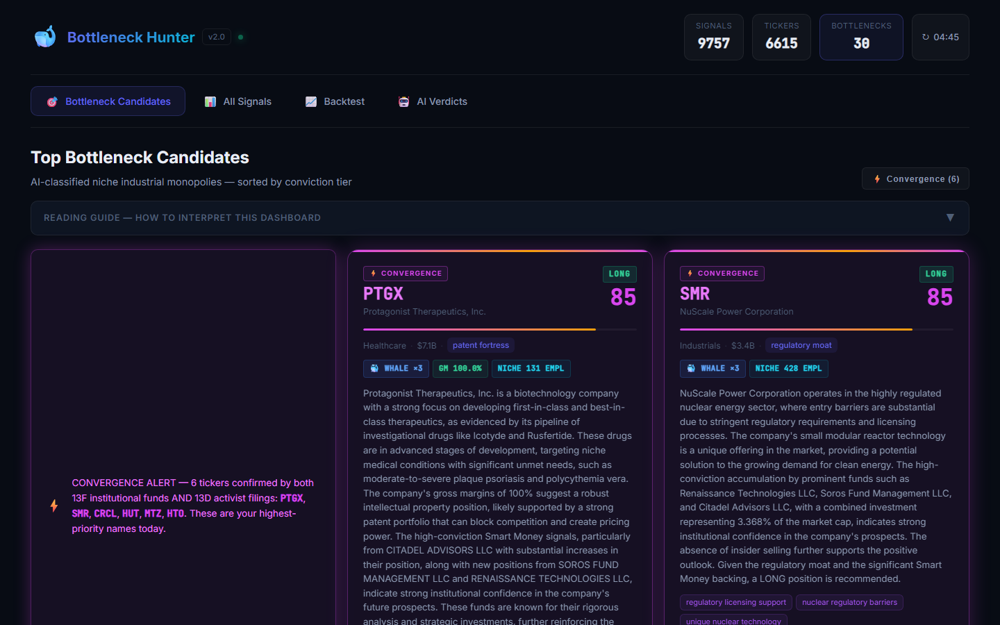

Follow the conviction of smart money.
Whale Signals turns raw SEC filings into a ranked shortlist of high-conviction ideas: insider cluster buying, new institutional stakes, and activist positions, scored, backtested, and explained by AI.
$ whale-signals rank --max-market-cap 50e9 --top 5
TICKER CONVICTION WHY
XXXX 87 3 insiders buying · 2 funds new stake · 13D filed
YYYY 74 2 funds consensus · position 4.1% of mkt cap
ZZZZ 69 insider cluster (CEO, CFO) · Congress buy
WWWW 58 activist 13D · mid-cap industrial
# illustrative outputThe product
Our dashboard today tracks nearly 10,000 signals across 6,600+ tickers, with AI-classified bottleneck candidates ranked by conviction.

How it works
From public filings to an explainable shortlist, in four steps.
Ingest
We continuously pull Form 4, 13F-HR and Schedule 13D/13G filings from SEC EDGAR, plus STOCK Act disclosures from U.S. Congress.
Filter the noise
Only open-market purchases count. Option grants, scheduled 10b5-1 trades, sales and index rebalancing are discarded.
Detect agreement
Cross-fund consensus and insider cluster buying reveal when independent, informed buyers converge on the same company.
Validate & explain
Every signal pattern is measured against the market with an event-study backtester, then explained in plain language by our AI analyst.
Signals we track
Insider cluster buying
Multiple Section 16 insiders (CEO, CFO, directors) buying their own stock within a short window, one of the cleanest signals in the academic literature.
Institutional consensus
New stakes and large increases from top 13F filers, aggregated across funds so you see when several super-investors agree.
Activist stakes
13D and 13G filings when an investor crosses 5% ownership, often a multi-year catalyst backed by deep due diligence.
Congressional trades
STOCK Act disclosures cross-referenced against every signal as an independent confirmation source.
Market context
Sector, industry, market cap and business profile for every ticker, so you can focus on under-covered mid-caps.
Statistical backtests
Cumulative abnormal returns vs. SPY with t-stats, p-values and bootstrap confidence intervals. No edge is assumed; it is measured.
An analyst that reads every filing.
Our AI analyst reads each company's business description, filings and our quantitative signal data, then answers the question that matters: is this company a bottleneck, a niche supplier with real pricing power the rest of the market depends on?
- Classifies each candidate's moat and bottleneck category
- Assigns an impact score that feeds back into the conviction ranking
- Writes a transparent thesis citing the underlying evidence
bottleneck_category
Specialty industrial components: sole qualified supplier for a critical subsystem.
thesis
Three insiders bought on the open market within 21 days while two long-only funds opened new positions. Revenue concentration with long-term contracts suggests durable pricing power.
# illustrative output
About
Whale Signals is an independent, bootstrapped startup founded in 2026 and based in Spain.
Joan Ramon Escandell
Founder & CEO
Joan designs and builds the Whale Signals engine end to end: SEC data ingestion, signal detection, the backtesting framework and the AI analyst.
Get early access
We're onboarding a small group of investors and analysts during the private beta.
hello@getwhalesignals.com